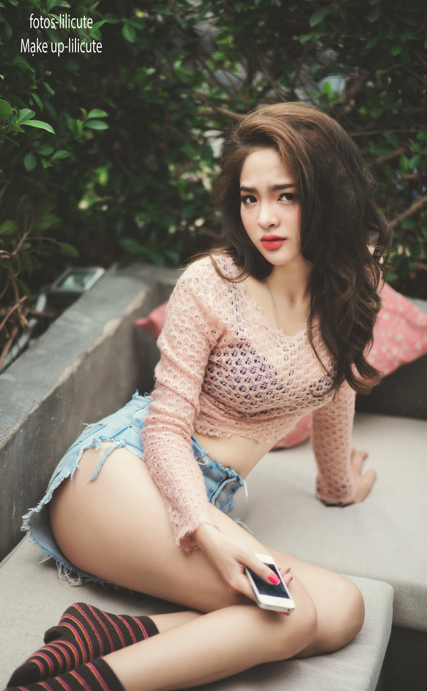
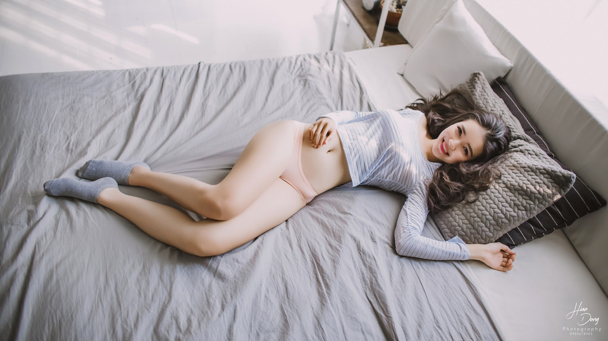
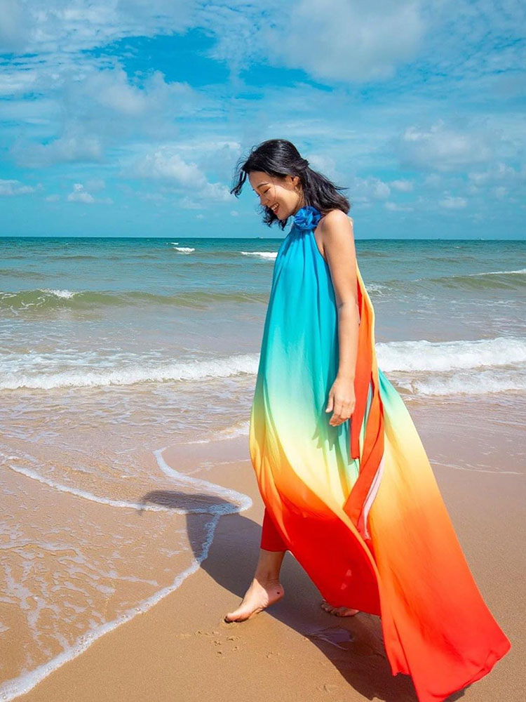
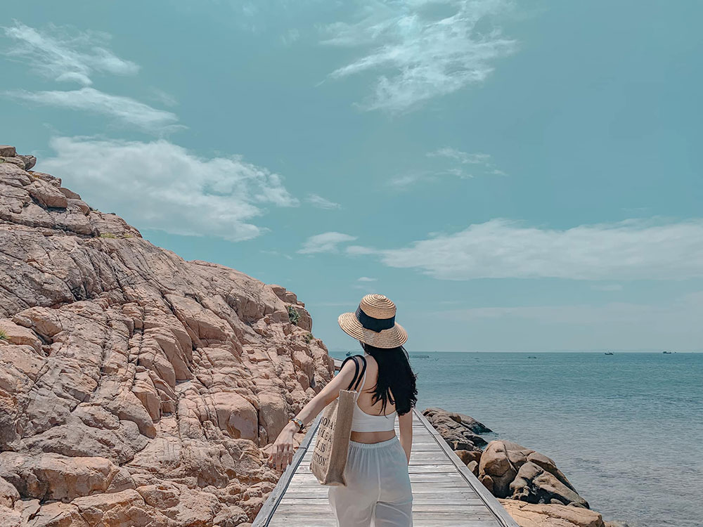

Ngoài chuẩn bị quần áo, phụ kiện, mỹ phẩm... du khách có thể áp dụng thêm các bí quyết tạo dáng đơn giản để có những bộ ảnh đẹp.
Tương tác với phụ kiện là một trong những cách tạo ra sự tự nhiên cho bức ảnh. Đặt tay lên mũ cói rộng vành, cầm máy ảnh hay khoác một chiếc khăn choàng rực rỡ... là những gợi ý để bạn tạo điểm nhấn trong hình
  